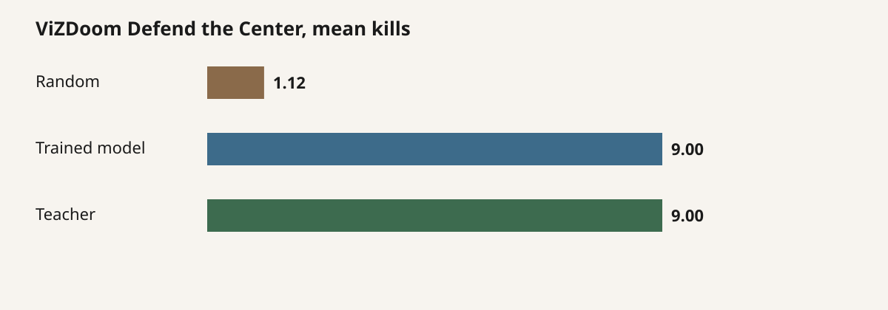
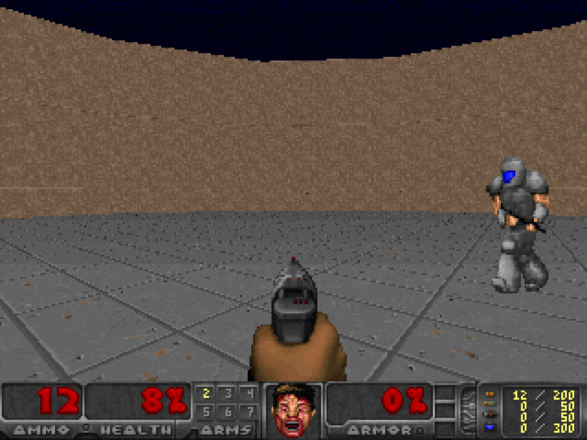
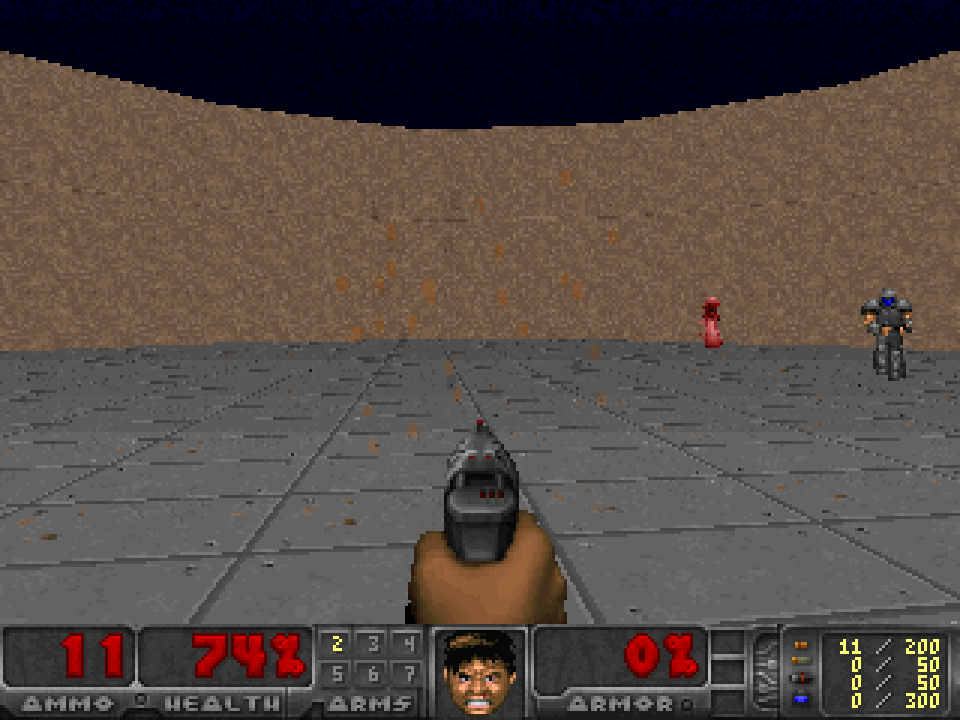

2026-09-17 · post #9
Real Doom, a trained winner
Pong still looked like a toy. This is ViZDoom. Freedoom frames. The controller that wins is a fitted aim cone on engine object state.
Issue #21 asked for a game people recognise, using a harness someone else already maintains. We did not write a renderer. ViZDoom 1.3 ships Freedoom and, if you turn them on, state.objects and state.labels. That is the same structured-state interface TypeSafe’s Jev Doom demo uses.
- Trained aim cone
- 9.0 kills
- Random
- 1.1 kills
- Episodes ≥3 kills
- 8 / 8
- This revision
- $0.05
A real engine, a small observation
The scenario is Defend the Center: you stand in the middle of an arena, pistol out, monsters spawn on the ring. Three buttons — turn left, turn right, attack. Timeout 2100 tics. Reward is +1 per kill, −1 on death.
The policy never sees the 320×240 tensor. ViZDoom already lists every actor. We drop DoomPlayer, take the nearest remaining object, and write a short observation: health, ammo, threat count, nearest name, distance, signed bearing in degrees, plus the tightest on-screen label if one exists.
The teacher aims at that nearest monster. Attack when |bearing| ≤ 8°. Otherwise turn toward it. TURN_LEFT increases Doom angle; we checked that with a unit test before any GPU job. Call it a teacher, not an oracle. Skip 4 tics per decision.
The fitted cone is the winner
We search cone ∈ {4, 6, 8, 10, 12, 16} on the labeled states and keep the best agreement. It recovers 8°. That controller is trained on the same labels as the Qwen head. Closed-loop, eight episodes, identical seeds:
| Policy | Mean kills | Mean return | Win rate | Episodes |
|---|---|---|---|---|
| Random | 1.13 | +0.13 | 13% | 8 |
| Qwen scorer | 0.00 | −1.00 | 0% | 3 |
| Fitted aim cone | 9.00 | +8.00 | 100% | 8 |
| Teacher | 9.00 | +8.00 | 100% | 8 |

Sample Qwen on Vast L4, run_577746f2c18b58372a8c404c2b8f2a1c: offline agreement 0.662 after one LoRA epoch, then 0 kills closed-loop. Action histogram was 100% turn right. Head tensors changed. Reload matched. The 0.5B scorer copied a sliver of the labels and never fired. Same honesty rule as Pong.
The video policy is the fitted cone. Same clock as the baselines. Deploy whichever closed-loop kill count is higher; here that is the cone.

Random, last frame.

Trained cone, mid-fight. Finishes 11 kills on this seed.
Train it on Compute
One file. Hand compute.cx/SKILL.md to your agent, plus this post’s overlay. The script trains the Qwen head, fits the cone, and deploys whichever closed-loop kill count is higher.
curl -fsSL https://raw.githubusercontent.com/theoriclabs/letsusecompute/main/posts/jev-doom/train.py -o train.py
compute run train.py::train --gpu cheap --dry-run
compute gpu list
compute run train.py::train --gpu L4 --timeout 2400 --wait --args '{"sample": true}'
compute run train.py::train --gpu L4 --timeout 5400 --waitDry-run only prints the upload plan. vizdoom==1.3.0 ships the Freedoom WAD. Observation mode is structured objects, not pixels into the network. If --gpu cheap quotes a sold-out SKU from the decorator, pass an available SKU from the live list.
What the cheap GPU runs cost
Vast RTX-3090 was listed available, then sku_unavailable on create, $0, rpt_3765dde7b612ab979225675be64024c2. --gpu cheap kept quoting the decorator SKU and hit a ten-minute cooldown. RTX-6000-ADA listed yes, then no interruptible offers, $0, rpt_239cad5208c8a985365282daf72ead4f. Sample on L4, run_577746f2c18b58372a8c404c2b8f2a1c, $0.03: 80 states, Qwen 0 kills, threshold 10.3 kills, reload_ok. Full L4 run run_6390d2547371c10b15795294dfe811e9 collected 1,600 states, hit val 0.594 on head epoch 1, then the spot machine was marked lost, $0.02, rpt_e6fa8e2d373259c1dcc2f1f0858c3cc5. Headline kill table is eight local episodes of the same cone. This revision $0.05. vizdoom pip install on the machine took 120 seconds.
What this does not claim
It does not reproduce Jev or RLCD. The winning policy is a one-parameter aim cone on engine coordinates, evaluated on the same kill clock as random. A smooth replay is not real-time control. We did not host an endpoint. Pixel-in Doom is still a separate milestone. Pokémon Red is a sibling ticket and needs a ROM you already own.